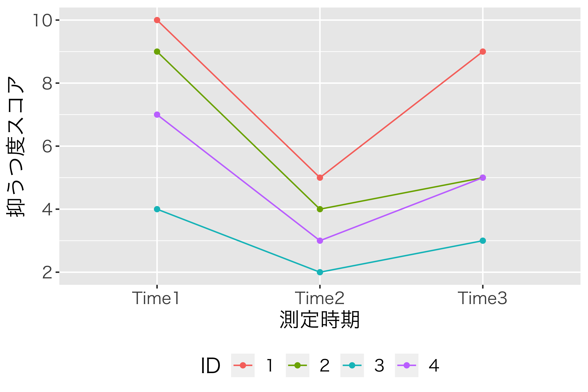
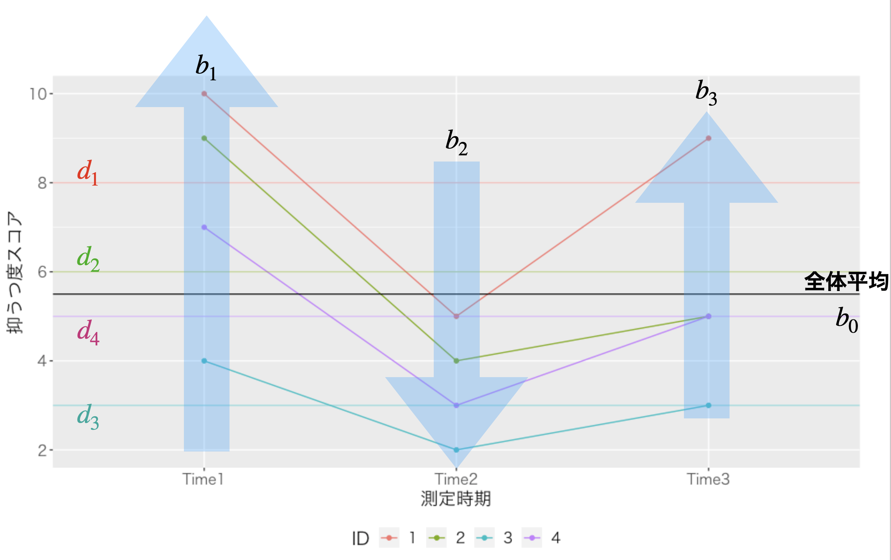
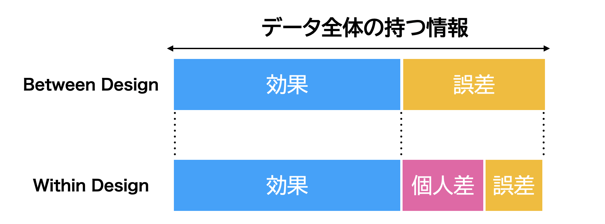
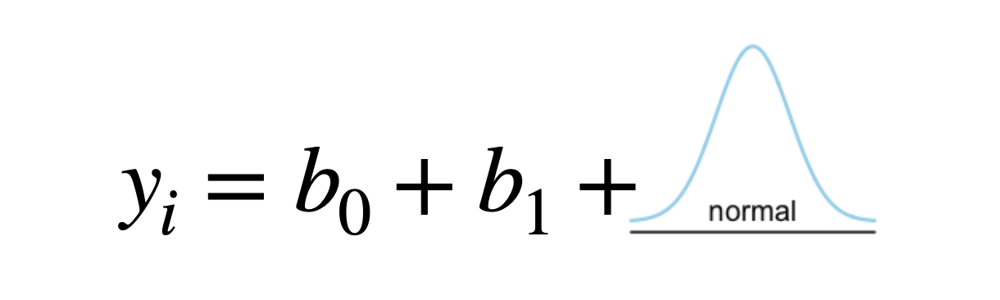
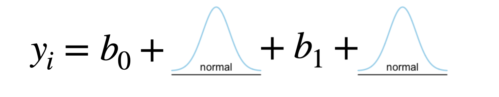

Chapter 6 実験計画法3；一要因モデル(Within)
ここまで，線形モデルとしての実験計画法を見てきました。一要因，二要因がそれぞれ単回帰分析，重回帰分析に対応すること，二要因以上になると組み合わせの効果が出現することなどを見てきました。 しかしここまでの話はいずれも，計画の話でした。そこで計画の場合はどのようになるか，というところに目を向けていきたいと思います。
6.1 Within計画の場合
群内要因での例を考えていくにあたって，今回も数値例を基に話を始めてから，線形モデルでの表現へ，と進めていきたいと思います。
今回は一要因3水準の，群内計画の要因計画の話をしましょう。データに対応がある，あるいは反復測定であることがポイントです。同じ人に複数回データを提供してもらう，次のような状況をイメージしてください。
臨床心理学者がある介入法をつかってメンタルケアに取り組んでいます。4人のクライアントにこの手法を適用し，抑うつ度が改善されていくかどうかチェックします。表1.1のようなスコアが得られたとき，この介入法に効果あるかどうかを考えたい，とします。
| ID | Time1 | Time2 | Time3 |
|---|---|---|---|
| 1 | 10 | 5 | 9 |
| 2 | 9 | 4 | 5 |
| 3 | 4 | 2 | 3 |
| 4 | 7 | 3 | 5 |
\[tbl::22_05\]
このデータを図にしてみましょう。ポイントは，3つの調査時点(Time1,2,3)それぞれが独立ではなく，クライアント番号(ID)は共通しているというところです。横軸は時間だとすると，その軸に意味がありますから，同じ人のデータ点を線で結ぶことができるのです。

介入効果によるクライアントの状態変化
図1.1をみていると，個人差こそあれ，第一期(Time1)から二期(Time2)にかけては一旦下降傾向があり，第二期から三期(Time3)にかけては上昇傾向があるのかなあ，と思ったりします。この直感をデータで検証してくことが大事ですね。
ここで考えたいのは，「個人差こそあれ」のところです。があるというのは，最初10点から始まるのか(ID=1)，4点から始まるのか(ID=3)，というところで既に7点差ついてるのですが，今回これは個人差であって見たい効果の部分ではない，と考えるということです。見たい効果は「時期」要因による，3つの水準それぞれへの影響，\(b_j\) です。数式的に表現すると，個人\(i\) の第\(j\)期におけるデータ\(y_{ij}\)は，次のように表すことができます。
\[y_{ij} = b_0 + d_i + b_j x_{ij} + e_{ij}\]
ここで\(x_{ij}\)はまたしても，第\(j\)期に\(b_j\)の効果がある(\(1\))かない(\(0\))かを表している記号だと思ってください。具体的には，\(i\)さんの3つの時期\(j=1,2,3\)の効果を隠さずに書くとしたら，次のようになっていることに注意です。 \[y_{i1} = b_0 + d_i + b_1 x_{i1} + b_2 x_{i2} + b_3 x_{i3} + e_{i1} = b_0 + d_i + b_1 \times 1 + b_2 \times 0 + b_3 \times 0 + e_{i1} = b_0 + d_i + b_1 + e_{i1}\\ \]
\[y_{i2} = b_0 + d_i + b_1 x_{i1} + b_2 x_{i2} + b_3 x_{i3} + e_{i2} = b_0 + d_i + b_1 \times 0 + b_2 \times 1 + b_3 \times 0 + e_{i2} = b_0 + d_i + b_2 + e_{i2}\\ \]
\[y_{i3} = b_0 + d_i + b_1 x_{i1} + b_2 x_{i2} + b_3 x_{i3} + e_{i3} = b_0 + d_i + b_1 \times 0 + b_2 \times 0 + b_3 \times 1 + e_{i3} = b_0 + d_i + b_3 + e_{i3}\\ \]
また，ポイントとして，新たに\(d_i\)というのが出てきていることに注意してください。これは\(i\)に伴って変わる数字で，時期\(j\)の添字がついていませんから，「時期を通して一貫した個人の平均値」ということになります。\(b_0\)は\(i\)も\(j\)もついていませんから，個人にも時期にも関係なく変化しない全体の平均値を表しています。

線形モデルで表現
これを図で表したのが図1.2です。全体平均\(b_0\)とは別に，個別の平均\(d_i\)の水平線が引かれています。個人平均は個々人のベースラインですので，時期によって変わりません。時期の効果\(b_j\)は4人に等しく影響します。添字\(i\)がないことでこれを表現しています。効果は同じであったとしても，個人の平均が違うので，データとして得られる数字は様々になっている，というわけです。もちろん個人差，効果を考慮しても析出できない誤差\(e_{ij}\)がありますし，これまで同様\(b_{j}\)は相対的，つまり全ての水準を足し合わせると\(0\)になってしまうものです。また，個人の平均値\(d_i\)も相対的なものとして捉えられます。全体平均\(b_0\)が別にあるからですね。これまで同様に無作為に割り付けているので，何の効果も個人差もなかったら，全体平均の横一線に並ぶはずだ，というのが基本的なアイデアだからです。
具体的な数字を使って考えてみましょう。表1.1の行平均，列平均，全体平均を計算してみました。 行方向の平均は個人ごとの平均です。最初の人(ID=1)は平均が\(8\)ですから，全体平均から考えて\(+2.5\)の個人差がある人なのです。 また，列方向の平均は水準ごとの平均で，これが今回見たい効果ということになります。第1期(Time1)は平均が\(7.5\)ですから全体平均から考えて\(+2.0\)の効果があった時期だ，ということです。
個別のデータ，たとえばID=1の第2期のデータは，理論通りに行けば，全体平均\(5.5\)に個人差\(+2.5\)と時期の効果\(-2.0\)が加わって出てくるはずです。\(5.5+2.5-2.0＝6.0\)になるはずですが，実際は\(5\)ですね。この違いは，理論では考えられないところなので，誤差になります。
| ID | Time1 | Time2 | Time3 | 平均 |
|---|---|---|---|---|
| 1 | 10 | 5 | 9 | 8 |
| 2 | 9 | 4 | 5 | 6 |
| 3 | 4 | 2 | 3 | 3 |
| 4 | 7 | 3 | 5 | 5 |
| 平均 | 7.5 | 3.5 | 5.5 | 5.5 |
\[tbl::22_06\]
こうして，効果，個人差，誤差を計算して表にしたのが表1.3です。例によって総和すると0ですので，平方和を計算することで相対的な大きさを比較できるようになります。
| ID | 時期 | スコア | 全体平均 | 個人差 | 効果 | 誤差 |
|---|---|---|---|---|---|---|
| 1 | Time1 | 10 | 5.5 | +2.5 | +2.0 | 0.0 |
| 1 | Time2 | 5 | 5.5 | +2.5 | -2.0 | -1.0 |
| 1 | Time3 | 9 | 5.5 | +2.5 | 0.0 | +1.0 |
| 2 | Time1 | 9 | 5.5 | +0.5 | +2.0 | +1.0 |
| 2 | Time2 | 4 | 5.5 | +0.5 | -2.0 | 0.0 |
| 2 | Time3 | 5 | 5.5 | +0.5 | 0.0 | -1.0 |
| 3 | Time1 | 4 | 5.5 | -2.5 | +2.0 | -1.0 |
| 3 | Time2 | 2 | 5.5 | -2.5 | -2.0 | +1.0 |
| 3 | Time3 | 3 | 5.5 | -2.5 | 0.0 | 0.0 |
| 4 | Time1 | 7 | 5.5 | -0.5 | +2.0 | 0.0 |
| 4 | Time2 | 3 | 5.5 | -0.5 | -2.0 | 0.0 |
| 4 | Time3 | 5 | 5.5 | -0.5 | 0.0 | 0.0 |
| 平方和 | 39.0 | 32.0 | 6.0 |
\[tbl::22_07\]
ここにあるように，個人\(i\)の時期\(j\)における誤差，と各セルに細かく誤差が計算できるようになりました。これが群内要因計画の強みなのです。
6.2 群間計画と群内計画の比較
ここでとの構造的な違いに触れておきたいと思います。
群内計画では，個人が誰であるかという情報があったので個人差を算出でき，それに基づいて分析しました。 が，群内計画の時のデータを群間計画のように分析してみるとどうなるでしょうか。表1.2にある数字が同じであれば，当然全体の平方和(分散)は同じです。ただ個人情報が抜けているのであれば，効果と誤差にしか分割できません。言い換えると，群間計画というのは誤差の中に個人差が含まれており，「これは誤差なのかな，個人差なのかな？ 」という区別がつかない状態である，ということです(図1.3)。
最終的には，誤差の大きさに対して効果の大きさはどうか，という観点から評価します30。効果の大きさ＝分子が同じデータであれば，分母が小さい方が相対的に大きいと判断されることになりますね。群間計画の時の誤差は偶然誤差と個人差を含んでおり，群内計画の時は個人差を含みませんから，群内計画の方が群間計画よりも，分析の精度が高いということになります。
であれば，全ての研究が群内計画であればよいのに，と思うかもしれません。ただし現実的な問題として，同じ人に何度も何度もデータを提供してもらうのは，非常に負担をかけることになります(群内計画は反復測定計画とも呼ばれるのでした)。研究倫理的な観点，あるいは計画上の手間を考えると，群間計画にせざるを得ないということが少なくありません。研究者，研究に協力してくれる人，のコストを考えて実験計画はデザインする必要があるということです。

群内計画と群間計画の違い
6.3 分布から考える
計画がどのようなものであれ，データの散らばりを生んでいるのは効果，個人差，偶然誤差によるものだと考えるのでした。逆に言えば，これらがなければ全ての値は同じになるはずだ，という観点から逆算し，効果，個人差，偶然誤差の大きさを見積もっていったのです。
ここで，誤差を考える時には確率の考え方を利用してそれをコントロールする，という話を思い出してください。ガウスが考えた誤差論は，平均が\(0\)，分散\(\sigma^2\)で散らばる正規分布に従うのでした。すなわち誤差を\(e_{i}\)とすると，次のように表現できます31。 \[e_{i} \sim Normal(0, \sigma)\]
群間計画の場合は，各項目の値\(y_i\)を切片\(b_0\)と効果\(b_1\)と誤差に分けます。 \[y_i = b_0 + b_1 + e_i, \mbox{ただしここで}e_i \sim Normal(0, \sigma)\]

image
この\(e_i\)が正規分布に従うのですが，\(b_0+b_1\)のところは確率的に変わるものではないことに注意してください。ここが確率的に変わらないということをよく考えれば，数式に沿ってある値が足されることと同じです。右辺全体で見ると，\(b_0+b_1\)のところは，正規分布の位置を非確率的にずらすことでもあります。さらに言えば，正規分布の平均値が\(b_0+b_1\)なのであり，式全体を次のように書き換えることができます。
\[y_i \sim Normal(b_0+b_1 , \sigma)\]
細かいことですが，この式のポイントは，\(y=\)ではなく\(y\sim\)になっているところです。データが正規分布によって表現されているように変わったのです。また正規分布は位置(平均)と幅(分散あるいは標準偏差)によって特徴付けられるのでした。 線形モデル(要因計画)はこのように，確率分布の位置パラメータに数式(モデル)を当てはめることとも言えます。
また群内計画の場合は，個人差\(d_i\)も計算できるのでした。この個人差というのも，たくさん集めると確率的な傾向を表してくるはずで，とくに個々人の生得的な性質に関係するのであれば，それはまた正規分布に従うと言えるでしょう。今回の個人差も相対的に捉えるので，平均は\(0\)になりますから，これを踏まえて表現すると次のようになります。 \[d_i \sim Normal(0 , \delta)\]
さてそうすると，群内計画の場合は2つの異なる正規分布が混ぜ合わさった形になっていることになります。 \[y_{ij} = b_0 + d_i + b_{ij} + e_{ij}, \mbox{ただしここで}d_i \sim Normal(0,\delta), e_{ij} \sim Normal(0,\sigma)\]

image
確率的なモデルで考えると，群内計画のデータには2つの分布が混ざり込んでいるので，と呼ぶことがあります。先ほどの群間計画では，\(b_0+b_1\)で平均値をずらした正規分布にデータが従うことになりましたが，群内計画では\(b_0+b_1+d_i\)が既に確率的に分布し，それが平均値となった確率分布がデータの従う分布になる，つまり(誤差の)正規分布の中に(個人差の)正規分布が入れ子になった形でモデルが表現されたことになります。分布が混ざったので混合というのですね。またより複雑なモデルの場合，この個人差を説明する他の変数や要因をつかって，個人差の分布もモデル化することになります。そのような場合，個人差に関係なく全体に及ぼす効果のことを，個人差とともに変わりうる効果のことをと呼んで区別することがあります。名前だけでも覚えておいてください。
さて本講義はこの後，線形モデルに含まれる分布のことを考えながら，回帰係数や効果の大きさ，誤差の大きさを推定・評価していくへと展開していきます。 そのためにはデータがどのような分布をしているかを考え，理論的な分布の形に合わせて比較検討する，という手続きになります。具体的には「大体当てはまっている線形モデルの係数を考える」とか「線形モデルで計画された効果の大きさを推定する」「誤差の分布(散らばり)の大きさと効果の分布の大きさを比べる」といった手続きです。基本的にはこうした線形モデルであることを知っておいていただければ十分です。
また，統計モデルを使った推論は，どんどん発展させていくことができます。要因が1つ，2つと増えたように，混ぜ合わせる分布が複数あっても構わないのです。想像力を膨らませて，モデルにいろいろなパーツを組み立てることができるようになれば，心理学の研究や実験ももっとクリエイティブなものに感じられるでしょう。心理学の研究は，統計的な分析は，楽しいことなのですよ。